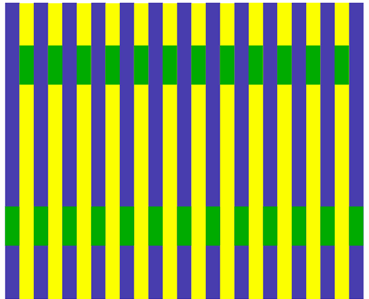
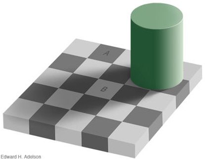
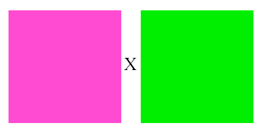

Origine: http://www.linternaute.com/photo_numerique/tirage-photo/test/domptez-les-couleurs-de-vos-photos
 |
 |
Voyez-vous les rectangles verts de même couleur ? Réponse dans la page suivante. © Colour Confidence / Bridge Europe |
Voyez-vous les carrés A et B d'un gris identique ? Réponse sur la page suivante. © Edward H. Adelson |
 |
|
Rapprochez-vous et fixez le 'X'. Lorsque les couleurs vont disparaître, vous continuerez à en voir d'autres... © L'Internaute Magazine |
|